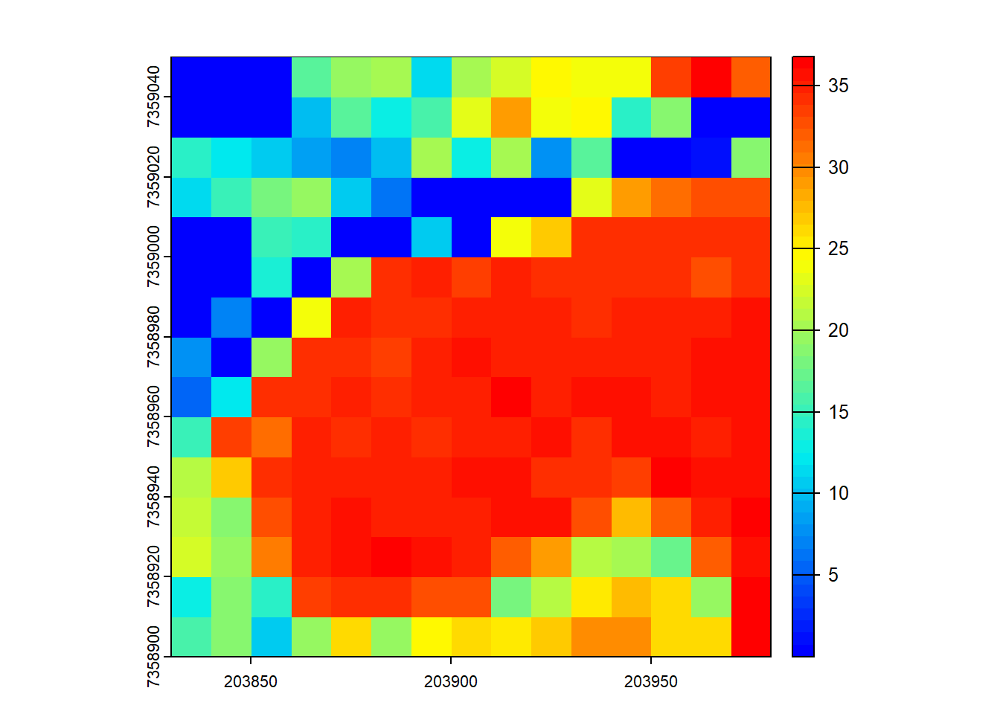
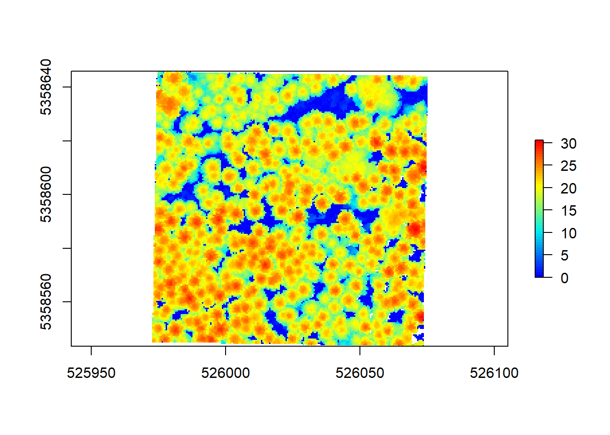

Excercise Solutions
1-LAS
library(lidR)
library(sf)
library(terra)E1.
What are withheld points? Where are they in our pointcloud?
According to ASPRS LAS specification http://www.asprs.org/wp-content/uploads/2019/07/LAS_1_4_r15.pdf page 18 “a point that should not be included in processing (synonymous with Deleted)”
They are on the edges. It looks like they correspond to a buffer. LAStools makes use of the withheld bit to flag some points. Without more information on former processing step it is hard to say.
E2.
Read the file dropping the withheld points.
Code
las <- readLAS("data/MixedEucaNat_normalized.laz", filter = "-drop_withheld")
plot(las)E3.
The withheld points seem to be legitimate points that we want to keep.
Try to load the file including the withheld points but get rid of the warning (without using suppressWarnings()). Hint: Check available -set_withheld filters in readLAS(filter = "-h")
Code
las <- readLAS("data/MixedEucaNat_normalized.laz", filter = "-set_withheld_flag 0")
plot(las, color = "Withheld_flag")E4.
Load only the ground points and plot the point-cloud coloured by the returnnumber of the point. Do it loading the strict minimal amount of memory (4.7 Mb). Hint: use ?lidR::readLAS and see what select options might help.
Code
las <- readLAS("data/MixedEucaNat_normalized.laz", filter = "-keep_class 2 -set_withheld_flag 0", select = "r")
plot(las, color = "ReturnNumber", legend = T)
format(object.size(las), "Mb")
#> [1] "4.6 Mb"2-ROI
plots <- st_read("data/shapefiles/MixedEucaNatPlot.shp")
#> Reading layer `MixedEucaNatPlot' from data source
#> `E:\Repositories\lidR_repos\lidRtutorial\data\shapefiles\MixedEucaNatPlot.shp'
#> using driver `ESRI Shapefile'
#> Simple feature collection with 5 features and 1 field
#> Geometry type: POINT
#> Dimension: XY
#> Bounding box: xmin: 203879.6 ymin: 7358932 xmax: 203960.6 ymax: 7359033
#> Projected CRS: SIRGAS 2000 / UTM zone 23S
plot(las@header, map = FALSE)
plot(plots, add = TRUE)
E1.
Clip the 5 plots with a radius of 11.3 m,
Code
inventory <- clip_roi(las, plots, radius = 11.3)
plot(inventory[[2]])E2.
Clip a transect from A c(203850, 7358950) to B c(203950, 7959000).
Code
tr <- clip_transect(las, c(203850, 7358950), c(203950, 7359000), width = 5)
plot(tr, axis = T)E3.
Clip a transect from A c(203850, 7358950) to B c(203950, 7959000) but reorient it so it is no longer on the XY diagonal. Hint = ?clip_transect
Code
ptr <- clip_transect(las, c(203850, 7358950), c(203950, 7359000), width = 5, xz = TRUE)
plot(tr, axis = T)
plot(ptr, axis = T)
plot(ptr$X, ptr$Z, cex = 0.25, pch = 19, asp = 1)3-ABA
las <- readLAS("data/MixedEucaNat_normalized.laz", select = "*", filter = "-set_withheld_flag 0")E1.
Assuming that biomass is estimated using the equation B = 0.5 * mean Z + 0.9 * 90th percentile of Z applied on first returns only, map the biomass.
Code
B <- grid_metrics(las, ~0.5*mean(Z) + 0.9*quantile(Z, probs = 0.9), 10, filter = ~ReturnNumber == 1L)
plot(B, col = height.colors(50))
Code
B <- grid_metrics(las, .stdmetrics_z, 10)
B <- 0.5*B[["zmean"]] + 0.9*B[["zq90"]]
plot(B, col = height.colors(50))Code
grid_metrics(las, ~as.list(quantile(Z), 10))
#> class : RasterBrick
#> dimensions : 8, 8, 64, 5 (nrow, ncol, ncell, nlayers)
#> resolution : 20, 20 (x, y)
#> extent : 203820, 203980, 7358900, 7359060 (xmin, xmax, ymin, ymax)
#> crs : +proj=utm +zone=23 +south +ellps=GRS80 +towgs84=0,0,0,0,0,0,0 +units=m +no_defs
#> source : memory
#> names : X0., X25., X50., X75., X100.
#> min values : 0.00, 0.00, 0.00, 0.00, 0.79
#> max values : 0.00, 12.32, 17.19, 27.40, 34.46E2.
Map the density of ground returns at a 5 m resolution with pixel_metrics(filter = ~Classification == LASGROUND).
Code
GND <- grid_metrics(las, ~length(Z)/25, res = 5, filter = ~Classification == LASGROUND)
plot(GND, col = heat.colors(50))
E3.
Map pixels that are flat (planar) using stdshapemetrics. These could indicate potential roads.
Code
m <- grid_metrics(las, .stdshapemetrics, res = 3)
plot(m[["planarity"]], col = heat.colors(50))Code
flat <- m[["planarity"]] > 0.85
plot(flat)5-DTM
E1.
Plot and compare these two normalized point-clouds. Why do they look different? Fix that. Hint: filter.
Some non ground points are below 0. It can be slightly low noise point not classified as ground by the data provider. This low points not being numerous and dark blue we hardly see them
Code
las1 <- readLAS("data/MixedEucaNat.laz", filter = "-set_withheld_flag 0")
nlas1 <- normalize_height(las1, tin())
nlas2 <- readLAS("data/MixedEucaNat_normalized.laz", filter = "-set_withheld_flag 0")
plot(nlas1)
plot(nlas2)
nlas1 <- filter_poi(nlas1, Z > -0.1)
plot(nlas1)E2.
Clip a plot somewhere in MixedEucaNat.laz (the non-normalized file).
Code
circ <- clip_circle(las, 203930, 7359000, 25)
plot(circ)E3.
Compute a DTM for this plot. Which method are you choosing and why?
Code
dtm <- grid_terrain(circ, 0.5, kriging())
#> Warning: There were 2 degenerated ground points. Some X Y coordinates were
#> repeated but with different Z coordinates. min Z were retained.
plot_dtm3d(dtm)E4.
Compute a DSM (digital surface model). Hint: Look back to how you made a CHM.
Code
dsm <- grid_canopy(circ, 1, p2r(0.1))
plot(dsm, col = height.colors(50))E5.
Normalize the plot.
Code
ncirc <- circ - dtm
plot(ncirc)E6.
Compute a CHM.
Code
chm <- grid_canopy(ncirc, 1, p2r(0.1))
plot(chm, col = height.colors(50))
E7.
Estimate some metrics of interest in this plot with cloud_metric()
Code
metrics <- cloud_metrics(ncirc, .stdmetrics_z)
metrics
#> $zmax
#> [1] 31.41
#>
#> $zmean
#> [1] 11.11374
#>
#> $zsd
#> [1] 11.44308
#>
#> $zskew
#> [1] 0.4123246
#>
#> $zkurt
#> [1] 1.42725
#>
#> $zentropy
#> [1] NA
#>
#> $pzabovezmean
#> [1] 42.39526
#>
#> $pzabove2
#> [1] 60.61408
#>
#> $zq5
#> [1] 0
#>
#> $zq10
#> [1] 0
#>
#> $zq15
#> [1] 0
#>
#> $zq20
#> [1] 0
#>
#> $zq25
#> [1] 0
#>
#> $zq30
#> [1] 0
#>
#> $zq35
#> [1] 1.18
#>
#> $zq40
#> [1] 2.14
#>
#> $zq45
#> [1] 3.62
#>
#> $zq50
#> [1] 5.25
#>
#> $zq55
#> [1] 8.903
#>
#> $zq60
#> [1] 13.12
#>
#> $zq65
#> [1] 18.32
#>
#> $zq70
#> [1] 22.1
#>
#> $zq75
#> [1] 24.31
#>
#> $zq80
#> [1] 25.62
#>
#> $zq85
#> [1] 26.7
#>
#> $zq90
#> [1] 27.53
#>
#> $zq95
#> [1] 28.39
#>
#> $zpcum1
#> [1] 18.12365
#>
#> $zpcum2
#> [1] 30.03214
#>
#> $zpcum3
#> [1] 35.78736
#>
#> $zpcum4
#> [1] 41.12687
#>
#> $zpcum5
#> [1] 45.38727
#>
#> $zpcum6
#> [1] 49.90123
#>
#> $zpcum7
#> [1] 56.24318
#>
#> $zpcum8
#> [1] 68.07501
#>
#> $zpcum9
#> [1] 91.750456-ITS
Using:
las <- readLAS("data/example_corrupted.laz", select = "xyz")
col1 <- height.colors(50)E1.
Run las_check() and fix the errors.
Code
las_check(las)
#>
#> Checking the data
#> - Checking coordinates... ✓
#> - Checking coordinates type... ✓
#> - Checking coordinates range... ✓
#> - Checking coordinates quantization... ✓
#> - Checking attributes type... ✓
#> - Checking ReturnNumber validity... ✓
#> - Checking NumberOfReturns validity... ✓
#> - Checking ReturnNumber vs. NumberOfReturns... ✓
#> - Checking RGB validity... ✓
#> - Checking absence of NAs... ✓
#> - Checking duplicated points...
#> ⚠ 202348 points are duplicated and share XYZ coordinates with other points
#> - Checking degenerated ground points... skipped
#> - Checking attribute population... ✓
#> - Checking gpstime incoherances skipped
#> - Checking flag attributes... ✓
#> - Checking user data attribute... skipped
#> Checking the header
#> - Checking header completeness... ✓
#> - Checking scale factor validity... ✓
#> - Checking point data format ID validity... ✓
#> - Checking extra bytes attributes validity... ✓
#> - Checking the bounding box validity... ✓
#> - Checking coordinate reference system... ✓
#> Checking header vs data adequacy
#> - Checking attributes vs. point format... ✓
#> - Checking header bbox vs. actual content... ✓
#> - Checking header number of points vs. actual content... ✓
#> - Checking header return number vs. actual content... ✓
#> Checking coordinate reference system...
#> - Checking if the CRS was understood by R... ✓
#> Checking preprocessing already done
#> - Checking ground classification... skipped
#> - Checking normalization... yes
#> - Checking negative outliers...
#> ⚠ 77 points below 0
#> - Checking flightline classification... skipped
#> Checking compression
#> - Checking attribute compression... no
las <- filter_duplicates(las = las)
las_check(las)
#>
#> Checking the data
#> - Checking coordinates... ✓
#> - Checking coordinates type... ✓
#> - Checking coordinates range... ✓
#> - Checking coordinates quantization... ✓
#> - Checking attributes type... ✓
#> - Checking ReturnNumber validity... ✓
#> - Checking NumberOfReturns validity... ✓
#> - Checking ReturnNumber vs. NumberOfReturns... ✓
#> - Checking RGB validity... ✓
#> - Checking absence of NAs... ✓
#> - Checking duplicated points... ✓
#> - Checking degenerated ground points... skipped
#> - Checking attribute population... ✓
#> - Checking gpstime incoherances skipped
#> - Checking flag attributes... ✓
#> - Checking user data attribute... skipped
#> Checking the header
#> - Checking header completeness... ✓
#> - Checking scale factor validity... ✓
#> - Checking point data format ID validity... ✓
#> - Checking extra bytes attributes validity... ✓
#> - Checking the bounding box validity... ✓
#> - Checking coordinate reference system... ✓
#> Checking header vs data adequacy
#> - Checking attributes vs. point format... ✓
#> - Checking header bbox vs. actual content... ✓
#> - Checking header number of points vs. actual content... ✓
#> - Checking header return number vs. actual content... ✓
#> Checking coordinate reference system...
#> - Checking if the CRS was understood by R... ✓
#> Checking preprocessing already done
#> - Checking ground classification... skipped
#> - Checking normalization... yes
#> - Checking negative outliers...
#> ⚠ 41 points below 0
#> - Checking flightline classification... skipped
#> Checking compression
#> - Checking attribute compression... noE2.
Find the trees and count the trees.
Code
ttops <- locate_trees(las = las, algorithm = lmf(ws = 3, hmin = 5))
x <- plot(las)
add_treetops3d(x = x, ttops = ttops)E3.
Compute and map the density of trees with a 10 m resolution.
Code
r <- terra::rast(x = ttops)
terra::res(r) <- 10
r <- terra::rasterize(x = ttops, y = r, "treeID", fun = 'count')
plot(r, col = viridis::viridis(20))
E4.
Segment the trees.
Code
chm <- grid_canopy(las = las, res = 0.5, algorithm = p2r(subcircle = 0.15))
plot(chm, col = col1)Code
ttops <- locate_trees(las = chm, algorithm = lmf(ws = 2.5))
las <- segment_trees(las = las, dalponte2016(chm = chm, treetops = ttops))
plot(las, color = "treeID")E5.
Assuming that a value of interest of a tree can be estimated using the crown area and the mean Z of the points with the formula 2.5 * area + 3 * mean Z. Estimate the value of interest of each tree.
Code
value_of_interest <- function(x,y,z)
{
m <- stdtreemetrics(x,y,z)
avgz <- mean(z)
v <- 2.5*m$convhull_area + 3 * avgz
return(list(V = v))
}
V <- crown_metrics(las = las, func = ~value_of_interest(X,Y,Z))
plot(x = V["V"])
Code
# 6. Map the total biomass at a resolution of 10 m. The output is a mixed of ABA and ITS
Vtot <- rasterize(V, r, "V", fun = "sum")
plot(Vtot, col = viridis::viridis(20))7-LASCTALOG
This exercise is complex because it involves options not yet described. Be sure to use the lidRbook and package documentation.
https://cran.r-project.org/web/packages/lidR/lidR.pdf https://r-lidar.github.io/lidRbook/index.html
Using:
ctg <- readLAScatalog(folder = "data/Farm_A/")E1.
Generate a raster of point density for the provided catalog. Hint: Look through the documentation for a function that will do this!
Code
ctg <- readLAScatalog("data/Farm_A/", filter = "-drop_withheld -drop_z_below 0 -drop_z_above 40")
D1 <- rasterize_density(las = ctg, res = 4)
#> Chunk 1 of 25 (4%): state ✓
#> Chunk 2 of 25 (8%): state ✓
#> Chunk 3 of 25 (12%): state ✓
#> Chunk 4 of 25 (16%): state ✓
#> Chunk 5 of 25 (20%): state ✓
#> Chunk 6 of 25 (24%): state ✓
#> Chunk 7 of 25 (28%): state ✓
#> Chunk 8 of 25 (32%): state ✓
#> Chunk 9 of 25 (36%): state ✓
#> Chunk 10 of 25 (40%): state ✓
#> Chunk 11 of 25 (44%): state ✓
#> Chunk 12 of 25 (48%): state ✓
#> Chunk 13 of 25 (52%): state ✓
#> Chunk 14 of 25 (56%): state ✓
#> Chunk 15 of 25 (60%): state ✓
#> Chunk 16 of 25 (64%): state ✓
#> Chunk 17 of 25 (68%): state ✓
#> Chunk 18 of 25 (72%): state ✓
#> Chunk 19 of 25 (76%): state ✓
#> Chunk 20 of 25 (80%): state ✓
#> Chunk 21 of 25 (84%): state ✓
#> Chunk 22 of 25 (88%): state ✓
#> Chunk 23 of 25 (92%): state ✓
#> Chunk 24 of 25 (96%): state ✓
#> Chunk 25 of 25 (100%): state ✓
plot(D1, col = heat.colors(50))E2.
Modify the catalog to have a point density of 10 pts/m2 using the decimate_points() function. If you get an error make sure to read the documentation for decimate_points() and try: using opt_output_file() to write files to a temporary directory.
https://r-lidar.github.io/lidRbook/engine.html#engine-dtm-ondisk
Code
newctg <- decimate_points(las = ctg, algorithm = homogenize(density = 10, res = 5))
#> Error: This function requires that the LAScatalog provides an output file template.Code
opt_filter(ctg) <- "-drop_withheld"
opt_output_files(ctg) <- paste0(tempdir(), "/{ORIGINALFILENAME}")
newctg <- decimate_points(las = ctg, algorithm = homogenize(density = 10, res = 5))#> Chunk 1 of 25 (4%): state ✓
#> Chunk 2 of 25 (8%): state ✓
#> Chunk 3 of 25 (12%): state ✓
#> Chunk 4 of 25 (16%): state ✓
#> Chunk 5 of 25 (20%): state ✓
#> Chunk 6 of 25 (24%): state ✓
#> Chunk 7 of 25 (28%): state ✓
#> Chunk 8 of 25 (32%): state ✓
#> Chunk 9 of 25 (36%): state ✓
#> Chunk 10 of 25 (40%): state ✓
#> Chunk 11 of 25 (44%): state ✓
#> Chunk 12 of 25 (48%): state ✓
#> Chunk 13 of 25 (52%): state ✓
#> Chunk 14 of 25 (56%): state ✓
#> Chunk 15 of 25 (60%): state ✓
#> Chunk 16 of 25 (64%): state ✓
#> Chunk 17 of 25 (68%): state ✓
#> Chunk 18 of 25 (72%): state ✓
#> Chunk 19 of 25 (76%): state ✓
#> Chunk 20 of 25 (80%): state ✓
#> Chunk 21 of 25 (84%): state ✓
#> Chunk 22 of 25 (88%): state ✓
#> Chunk 23 of 25 (92%): state ✓
#> Chunk 24 of 25 (96%): state ✓
#> Chunk 25 of 25 (100%): state ✓E3.
Generate a raster of point density for this new decimated dataset.
Code
opt_output_files(newctg) <- ""
D2 <- grid_density(las = newctg, res = 4)
#> Chunk 1 of 25 (4%): state ✓
#> Chunk 2 of 25 (8%): state ✓
#> Chunk 3 of 25 (12%): state ✓
#> Chunk 4 of 25 (16%): state ✓
#> Chunk 5 of 25 (20%): state ✓
#> Chunk 6 of 25 (24%): state ✓
#> Chunk 7 of 25 (28%): state ✓
#> Chunk 8 of 25 (32%): state ✓
#> Chunk 9 of 25 (36%): state ✓
#> Chunk 10 of 25 (40%): state ✓
#> Chunk 11 of 25 (44%): state ✓
#> Chunk 12 of 25 (48%): state ✓
#> Chunk 13 of 25 (52%): state ✓
#> Chunk 14 of 25 (56%): state ✓
#> Chunk 15 of 25 (60%): state ✓
#> Chunk 16 of 25 (64%): state ✓
#> Chunk 17 of 25 (68%): state ✓
#> Chunk 18 of 25 (72%): state ✓
#> Chunk 19 of 25 (76%): state ✓
#> Chunk 20 of 25 (80%): state ✓
#> Chunk 21 of 25 (84%): state ✓
#> Chunk 22 of 25 (88%): state ✓
#> Chunk 23 of 25 (92%): state ✓
#> Chunk 24 of 25 (96%): state ✓
#> Chunk 25 of 25 (100%): state ✓
plot(D2, col = heat.colors(50))
E4.
Read the whole decimated catalog as a single las file. The catalog isn’t very big - not recommended for larger data sets!
Code
las <- readLAS(newctg)
plot(las)E5.
Read documentation for the catalog_retile() function and merge the dataset into larger tiles. Use ctg metadata to align new chunks to the lower left corner of the old ones. Hint: Visualize the chunks and use opt_chunk_* options.
Code
opt_chunk_size(ctg) <- 280
opt_chunk_buffer(ctg) <- 0
opt_chunk_alignment(ctg) <- c(min(ctg$Min.X), min(ctg$Min.Y))
plot(ctg, chunk = T)
opt_output_files(ctg) <- "{tempdir()}/PRJ_A_{XLEFT}_{YBOTTOM}"
newctg <- catalog_retile(ctg = ctg)#> Chunk 1 of 9 (11.1%): state ✓
#> Chunk 2 of 9 (22.2%): state ✓
#> Chunk 3 of 9 (33.3%): state ✓
#> Chunk 4 of 9 (44.4%): state ✓
#> Chunk 5 of 9 (55.6%): state ✓
#> Chunk 6 of 9 (66.7%): state ✓
#> Chunk 7 of 9 (77.8%): state ✓
#> Chunk 8 of 9 (88.9%): state ✓
#> Chunk 9 of 9 (100%): state ✓
plot(newctg)8-ENGINE
E1.
In example 2 (section B) what does last line m <- m[m$treeID %in% p$treeID,] do? Adjust the function to not include that line to see what happens (use catalog_select() to select 4 tiles to test on).
Code
# Subset catalog
subctg <- catalog_select(ctg)
# without line
routine_trees_test <- function(chunk) {
# Read in check, check NULL status, get bbox
las <- readLAS(chunk)
if (is.empty(las)) return(NULL)
bbox <- st_bbox(chunk)
# Filter surface points and generate chm
las <- filter_surfacepoints(las, res = 0.5)
chm <- rasterize_canopy(las = las, res = 0.5, algorithm = p2r())
# Tree detection, segmentation, metrics
ttops <- locate_trees(las = las, algorithm = lmf(ws = 3, hmin = 5))
las_trees <- segment_trees(las = las, algorithm = dalponte2016(chm = chm, treetops = ttops))
p <- crown_metrics(las = las_trees, func = .stdtreemetrics)
# Remove buffer
p <- sf::st_crop(x = p, y = bbox)
# Delineate crowns
output <- delineate_crowns(las_trees)
#output <- m[m$treeID %in% p$treeID,]
return(output)
}
options <- list(automerge = TRUE)
m <- catalog_apply(subctg, routine_trees_test, .options = options)
plot(m, col = rgb(0,0,1,0.3))Code
ctg <- readLAScatalog("data/Farm_A/")
opt_select(ctg) <- "xyz"
opt_filter(ctg) <- "-drop_withheld -drop_z_below 0 -drop_z_above 40"
opt_chunk_buffer(ctg) <- 15
opt_chunk_size(ctg) <- 0
subctg <- catalog_select(ctg)
options <- list(automerge = TRUE)
m <- catalog_apply(subctg, routine_trees_test, .options = options)
plot(m, col = rgb(0,0,1,0.3))E2.
The following is a simple (and a bit naive) function to remove high noise points. - Explain what this function does - Create a user-defined function to apply using catalog_apply() - Hint: Dont forget about buffered points… remember lidR::filter_* functions.
Code
filter_noise <- function(las, sensitivity)
{
p95 <- grid_metrics(las, ~quantile(Z, probs = 0.95), 10)
las <- merge_spatial(las, p95, "p95")
las <- filter_poi(las, Z < 1+p95*sensitivity, Z > -0.5)
las$p95 <- NULL
return(las)
}
filter_noise_collection = function(cl, sensitivity)
{
las <- readLAS(cl)
if (is.empty(las)) return(NULL)
las <- filter_noise(las, sensitivity)
las <- filter_poi(las, buffer == 0L)
return(las)
}
ctg = readLAScatalog("data/Farm_A/")
opt_select(ctg) <- "*"
opt_filter(ctg) <- "-drop_withheld -drop_"
opt_output_files(ctg) <- "{tempdir()}/*"
opt_chunk_buffer(ctg) <- 20
opt_chunk_size(ctg) <- 0
options <- list(automerge = TRUE)
output <- catalog_apply(ctg, filter_noise_collection, sensitivity = 1.2, .options = options)
#> Chunk 1 of 25 (4%): state ✓
#> Chunk 2 of 25 (8%): state ✓
#> Chunk 3 of 25 (12%): state ✓
#> Chunk 4 of 25 (16%): state ✓
#> Chunk 5 of 25 (20%): state ✓
#> Chunk 6 of 25 (24%): state ✓
#> Chunk 7 of 25 (28%): state ✓
#> Chunk 8 of 25 (32%): state ✓
#> Chunk 9 of 25 (36%): state ✓
#> Chunk 10 of 25 (40%): state ✓
#> Chunk 11 of 25 (44%): state ✓
#> Chunk 12 of 25 (48%): state ✓
#> Chunk 13 of 25 (52%): state ✓
#> Chunk 14 of 25 (56%): state ✓
#> Chunk 15 of 25 (60%): state ✓
#> Chunk 16 of 25 (64%): state ✓
#> Chunk 17 of 25 (68%): state ✓
#> Chunk 18 of 25 (72%): state ✓
#> Chunk 19 of 25 (76%): state ✓
#> Chunk 20 of 25 (80%): state ✓
#> Chunk 21 of 25 (84%): state ✓
#> Chunk 22 of 25 (88%): state ✓
#> Chunk 23 of 25 (92%): state ✓
#> Chunk 24 of 25 (96%): state ✓
#> Chunk 25 of 25 (100%): state ✓
las <- readLAS(output)
plot(las)E3.
Design an application that retrieves the convex hull of each flightline (hard). Use the concaveman::concaveman() function, adn functions from sf. Start by designing a test function that works on a LAS object and later apply on the collection. The output should look like:
flightlines <- st_read("data/flightlines.shp")
#> Reading layer `flightlines' from data source
#> `E:\Repositories\lidR_repos\lidRtutorial\data\flightlines.shp'
#> using driver `ESRI Shapefile'
#> Simple feature collection with 6 features and 1 field
#> Geometry type: POLYGON
#> Dimension: XY
#> Bounding box: xmin: 207340 ymin: 7357280 xmax: 208040 ymax: 7357980
#> Projected CRS: SIRGAS 2000 / UTM zone 23S
plot(flightlines, col = sf.colors(6, alpha = 0.5))plot(flightlines[3,])
Code
# Read the catalog
ctg <- readLAScatalog("data/Farm_A/")
# Read a single file to perform tests
las <- readLAS(ctg$filename[16], select = "xyzp", filter = "-drop_withheld -drop_z_below 0 -drop_z_above 40")
# Define a function capable of building the hull from the XY of a given PointSourceID
enveloppes <- function(x,y, psi)
{
hull <- concaveman::concaveman(cbind(x,y), length_threshold = 10)
hull <- sf::st_polygon(list(hull))
hull <- sf::st_sfc(hull)
hull <- sf::st_simplify(hull, dTolerance = 1)
hull <- sf::st_sf(hull)
hull$ID <- psi[1]
list(hull = list(hull = hull))
}
# Define a function that apply the previous function to each PointSourceID from a LAS object
flighline_polygons <- function(las)
{
u <- las@data[ , enveloppes(X,Y, PointSourceID), by = PointSourceID]
hulls <- Reduce(rbind, u$hull)
return(hulls)
}
# Test this function on a LAS
hulls <- flighline_polygons(las)
plot(hulls, col = sf.colors(3, alpha = 0.5))Code
# It works so let make a function that works with a LAScatalog
flighline_polygons <- function(las)
{
if (is(las, "LAS")) {
u <- las@data[ , enveloppes(X,Y, PointSourceID), by = PointSourceID]
hulls <- Reduce(rbind, u$hull)
return(hulls)
}
if (is(las, "LAScluster")) {
las <- readLAS(las)
if (is.empty(las)) return(NULL)
hulls <- flighline_polygons(las)
return(hulls)
}
if (is(las, "LAScatalog")) {
opt_select(las) <- "xyzp"
options <- list(
need_output_file = FALSE,
need_buffer = TRUE,
automerge = TRUE)
output <- catalog_apply(las, flighline_polygons, .options = options)
hulls <- dplyr::summarise(dplyr::group_by(output, ID), ID = ID[1])
return(hulls)
}
stop("Invalid input")
}
library(future)
future::plan(multisession)
opt_chunk_buffer(ctg) <- 5
opt_filter(ctg) <- "-drop_withheld -drop_z_below 0 -drop_z_above 40"
flightlines <- flighline_polygons(ctg)#> Chunk 1 of 25 (4%): state ✓
#> Chunk 2 of 25 (8%): state ✓
#> Chunk 3 of 25 (12%): state ✓
#> Chunk 4 of 25 (16%): state ✓
#> Chunk 5 of 25 (20%): state ✓
#> Chunk 6 of 25 (24%): state ✓
#> Chunk 7 of 25 (28%): state ✓
#> Chunk 8 of 25 (32%): state ✓
#> Chunk 9 of 25 (36%): state ✓
#> Chunk 10 of 25 (40%): state ✓
#> Chunk 11 of 25 (44%): state ✓
#> Chunk 12 of 25 (48%): state ✓
#> Chunk 13 of 25 (52%): state ✓
#> Chunk 14 of 25 (56%): state ✓
#> Chunk 15 of 25 (60%): state ✓
#> Chunk 16 of 25 (64%): state ✓
#> Chunk 17 of 25 (68%): state ✓
#> Chunk 18 of 25 (72%): state ✓
#> Chunk 19 of 25 (76%): state ✓
#> Chunk 20 of 25 (80%): state ✓
#> Chunk 21 of 25 (84%): state ✓
#> Chunk 22 of 25 (88%): state ✓
#> Chunk 23 of 25 (92%): state ✓
#> Chunk 24 of 25 (96%): state ✓
#> Chunk 25 of 25 (100%): state ✓
plot(flightlines, col = sf.colors(6, alpha = 0.5))